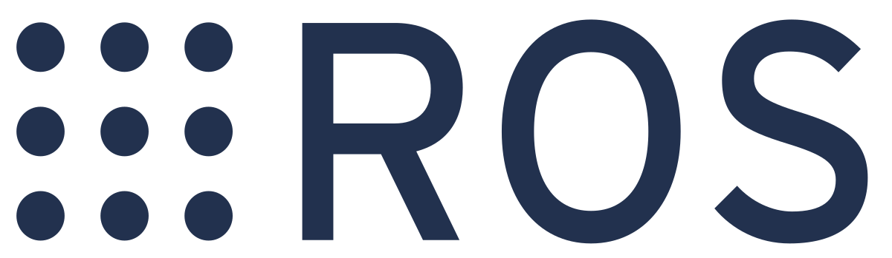
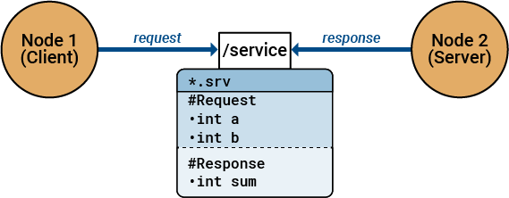

ROS
Основная документация: https://wiki.ros.org.
ROS – это широко используемый фреймворк для создания сложных, распределенных робототехнических систем. На ROS основана программная платформа Technic.

Установка
ROS уже установлен на образе для OPi для Technic.
Для установки инструментов ROS на компьютере вы можете обратиться к официальной документации по установке. Для быстрого старта рекомендуется воспользоваться образом виртуальной машины с ROS и симулятором Technic.
Концепции
Ноды
Основная статья: https://wiki.ros.org/Nodes.
ROS-ноды: основные принципы

ROS-нода представляет собой исполняемую программу, разработанную обычно на Python или C++, которая взаимодействует с другими компонентами системы через ROS-топики и ROS-сервисы. Такой модульный подход к построению робототехнических систем обеспечивает существенные преимущества: снижение связанности компонентов, повышение уровня повторного использования кода и увеличение общей надежности системы.
Большинство современных робототехнических библиотек и драйверов устройств реализованы в формате ROS-нод.
Создание ROS-ноды
Для преобразования стандартной программы в ROS-ноду необходимо:
Подключить специализированную библиотеку
rospy(для Python) илиroscpp(для C++)Добавить соответствующий инициализирующий код для интеграции с ROS-мастером.
Пример ROS-ноды на языке Python:
import rospy
rospy.init_node('my_ros_node') # имя ROS-ноды
rospy.spin() # входим в бесконечный цикл...
Подсказка Любая программа для автономного полета Technic является ROS-нодой.
Топики
Основная статья: https://wiki.ros.org/Topics.
Топики в ROS: механизм обмена данными

Топик в ROS представляет собой именованный канал передачи данных, через который ноды обмениваются сообщениями. Любая нода может выполнять две основные операции:
Публикация – отправка сообщений в любой топик
Подписка – получение сообщений из произвольного топика
Каждый топик должен иметь строго определённый тип передаваемых сообщений. ROS предоставляет обширную библиотеку стандартных типов сообщений, охватывающих различные робототехнические задачи, а также поддерживает создание пользовательских типов данных.
Примеры стандартных типов сообщений:
| Тип сообщения | Описание |
|---|---|
std_msgs/Int64 |
Целое число. |
std_msgs/Float64 |
Число с плавающей точкой (дробное) двойной точности. |
std_msgs/String |
Строка. |
geometry_msgs/PoseStamped |
Позиция и ориентация объекта с заданной системой координат и временной меткой (широко используется для передачи текущей позиции робота и его частей). |
geometry_msgs/TwistStamped |
Линейная и угловая скорость объекта с заданной системой координат и временной меткой. |
sensor_msgs/Image |
Изображение (см. статью о работе с камерой) |
Info Смотрите остальные стандартные типы сообщений в пакетах
common_msgs,std_msgs,geometry_msgs,sensor_msgsи других.
Пример публикации сообщения типа std_msgs/String (строка) в топик /foo на языке Python:
import rospy
from std_msgs.msg import String
rospy.init_node('my_ros_node')
foo_pub = rospy.Publisher('/foo', String, queue_size=1) # создаем Publisher
foo_pub.publish(data='Hello, world!') # публикуем сообщение
Пример подписки на топик /foo:
import rospy
from std_msgs.msg import String
rospy.init_node('my_ros_node')
def foo_callback(msg):
print(msg.data)
# Подписываемся. При получении сообщения в топик /foo будет вызвана функция foo_callback.
rospy.Subscriber('/foo', String, foo_callback)
rospy.spin() # входим в бесконечный цикл, чтобы программа не завершила работу
Вы можете прочитать данные из топика однократно, используя функцию wait_for_message:
msg = rospy.wait_for_message('/foo', String, timeout=3) # ждать сообщения в топике /foo в таймаутом 3 с
Также существует возможность работы с топиками с помощью утилиты rostopic. Например, с помощью следующей команды можно просматривать сообщения, публикуемые в топик /mavros/state:
rostopic echo /mavros/state
Команда rostopic info позволяет узнать тип сообщений в топике, команда rostopic hz — частоту публикуемых в топике сообщений.
Также данные в топиках можно визуализировать и в графических инструментах ROS.
Сервисы
Основная статья: https://wiki.ros.org/Services.
Сервисы в ROS: взаимодействие по схеме "запрос-ответ"

Сервис в ROS реализует механизм удаленного вызова процедур, позволяющий одной ноде инициировать операцию, которая будет выполнена в другой ноде. Каждый сервис обладает уникальным именем (аналогично топику) и использует два строго определенных типа сообщений:
тип для формирования запроса
тип для получения ответа
Такой подход организует четкое взаимодействие между компонентами системы по принципу "запрос-ответ".
Таким образом, сервисы реализуют паттерн удаленного вызова процедур
Пример вызова ROS-сервиса из языка Python:
import rospy
from technic.srv import GetTelemetry
rospy.init_node('my_ros_node')
# Создаем обертку над сервисом get_telemetry пакета clover с типом GetTelemetry:
get_telemetry = rospy.ServiceProxy('get_telemetry', srv.GetTelemetry)
# Вызываем сервис и получаем телеметрию квадрокоптера:
telemetry = get_telemetry()
С сервисами можно также работать при помощи утилиты rosservice. Так можно вызвать сервис /get_telemetry из командной строки:
rosservice call /get_telemetry "{frame_id: ''}"
Больше примеров использования сервисов для автономных полетов квадрокоптера Клевер можно посмотреть в документации ноды simple_offboard
Имена
Основная статья: https://wiki.ros.org/Names.
Именование в ROS: иерархия и области видимости
Каждый ресурс в ROS — будь то топик, сервис или параметр — однозначно определяется своим уникальным именем. Это имя имеет иерархическую структуру, где элементы разделяются символом /, что аналогично организации путей в файловой системе.
Примеры ROS-имен:
/(корневое или глобальное пространство имён)/sensors/camera/ugv/navigation/goal/controller/motor_speed
Важно отметить, что такие имена являются глобальными (подобно абсолютному пути к файлу), то есть они видны и интерпретируются одинаково для всех узлов в системе. Однако в целях повышения модульности и избежания конфликтов имён, в реальных разработках рекомендуется применять относительные или приватные имена.
Приватное имя
Каждая нода в ROS имеет собственное приватное пространство имён, которое автоматически соответствует её имени. Это позволяет изолировать ресурсы ноды и избежать конфликтов имён в системе.
Например, нода aruco_detect может создавать следующие топики в своём приватном пространстве:
/aruco_detect/markers/aruco_detect/visualization/aruco_detect/debug
Для удобства обращения к своим ресурсам нода может использовать сокращённую запись с символом ~ вместо полного указания пространства имён. Таким образом, вместо /aruco_detect/markers можно использовать:
~markers~visualization~debug
Этот синтаксис делает код более компактным и упрощает его поддержку.
Таким образом, создание топика foo в приватном пространство имен из Python будет выглядеть так:
private_foo_pub = rospy.Publisher('~foo', String, queue_size=1)
Относительное имя
Несколько нод также могут объединяться в общее пространство имен (например, при одновременной работе нескольких роботов). Для того, чтобы ссылаться на топики с учетом общего пространства имен, в названии ресурса опускается начальный символ /.
Пример создание топика foo с учетом общего пространства имен:
relative_foo_pub = rospy.Publisher('foo', String, queue_size=1)
Подсказка В общем случае всегда рекомендуется использовать приватные или относительные имена ресурсов и никогда не использовать глобальные.
Работа на нескольких машинах
Основная статья: https://wiki.ros.org/ROS/Tutorials/MultipleMachines.
Одним из ключевых преимуществ ROS является возможность распределения вычислительной нагрузки между несколькими машинами в сети. Это позволяет оптимально использовать ресурсы различного оборудования в зависимости от решаемых задач.
Примеры распределённой архитектуры:
Нода для обработки изображений и компьютерного зрения может работать на мощной стационарной рабочей станции
Нода управления дроном может выполняться на одноплатном компьютере (например, Raspberry Pi), непосредственно подключенном к полётному контроллеру
Другие узлы системы могут быть размещены на серверах или специализированных вычислительных устройствах
Такой подход обеспечивает гибкость при построении систем и позволяет эффективно использовать доступные вычислительные ресурсы.
Дополнительные материалы
- Учебник по ROS от Voltbro - http://docs.voltbro.ru/starting-ros/.
- Другие книги по ROS - https://wiki.ros.org/Books.
- Курс по ROS 2 - https://stepik.org/course/221157/promo
1. Также встречается перевод "узел". ↩